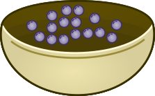
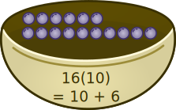
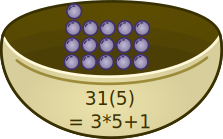

Score: 0
Memory like concept - match across bases 💙
Find two matching values across different number systems.
Yes, but feel free to skip that for now. You are not required to become a mathematician just to play this game.
Flip the cubes when you are lost, and watch out for (10) -> this tells you it's a the base you are used to (the decimal system).
A base or number system is how you gather things (like marbles, balls or apples) and squash them into numbers. It's easier for your brain to remember them like this.
For example:

Here the balls are all in disarray.
In the next picture the
balls are arranged in twos.
You can arrange them in a different order as well:
Here they are arranged in tens. In the next picture, they are arranged in fives.

Notice that in every bowl, there are exactly 16 marbles*.
This is the goal of the game: To find the matching values,
regardless of the number base you are in.
* 16 as counted in our decimal system, where you always count up to 10, then start a "new" round: 10+6.
You might also notice that instead of 80(2) as expected, you count as 10000(2) when counting in twos. The reason for this is that you only restrict yourself to two digits, 1 and 0, so there is no 8 in this world (1 and 0's evil world domination agenda 😈), so you have to jump up a decimal point instead.